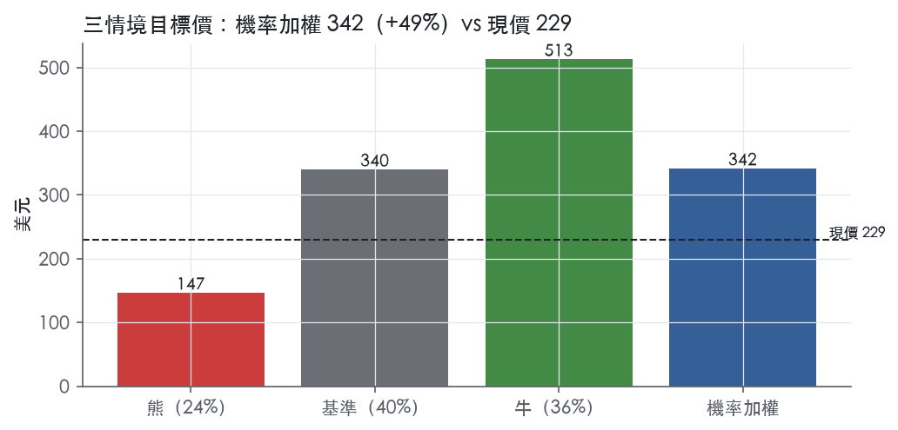
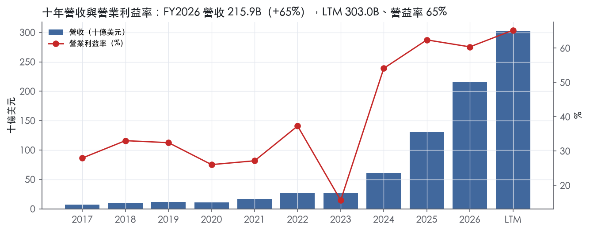
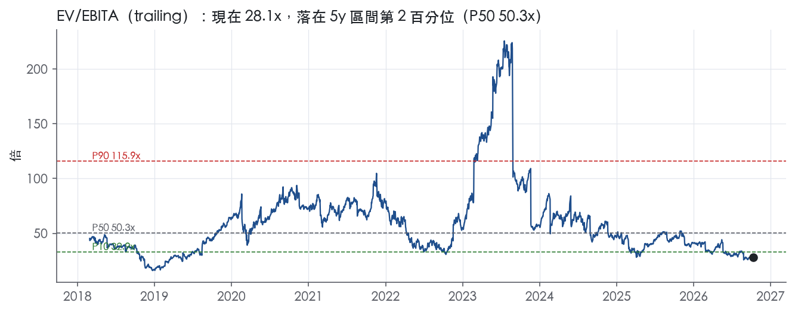
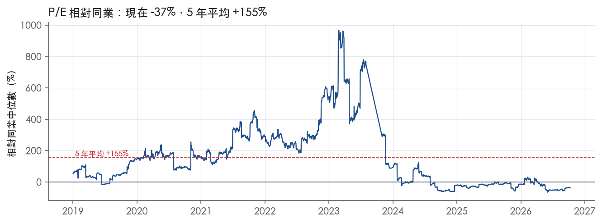
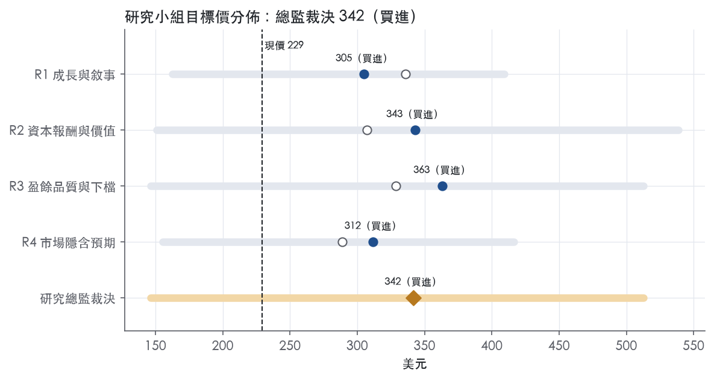
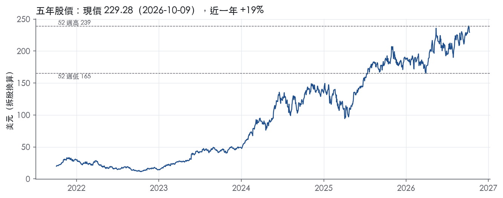

評等總表 › 資訊科技 › NVDA
三季加速壓倒週期頂定價，但品質訊號留在基準裡，看多｜評等 買進｜目標價 342
| 報告日 | 評等 | 目標價 | 當時股價 | 超額報酬 |
|---|---|---|---|---|
| 2026-10-09 | 買進 | 342 | 229 | +39.5% |
| 評等 | 買進 |
| 12 個月目標價 | 342 美元 |
| 現價 | 229.28 美元（2026-10-09） |
| 預期報酬 | 股價 +49.0%＋股息 0.2%＝總報酬 +49.2%；同業籃門檻 9.7%，超額 +39.5% |
| 估值方法 | EV/EBITA 23.0x，套在第 5–8 季的EBITA（也就是一年後的未來四季） |
| 三情境 | 熊 147／基準 340／牛 513 |
| 研究流程 | 四位研究員兩輪辯論＋研究總監裁決 |
| 資料來源 | SEC EDGAR XBRL、Tiingo、FRED（全免費） |
三季加速壓倒週期頂定價，但品質訊號留在基準裡，看多（研究總監裁決，四位研究員兩輪辯論後）
評等 買進｜12 個月目標價 342 美元（總監三情境機率加權 356 與研究員中位數 327 各半）｜現價 229.28（2026-10-09）
預期報酬：股價 +49.0%＋股息 0.2%＝總報酬 +49.2%。同業籃門檻 9.7%，超額 +39.5%。
估值方法：EV/EBITA 23.0x，套在第 5–8 季的EBITA（也就是一年後的未來四季）。三情境：熊 147（24%）／基準 340（40%）／牛 513（36%）。
什麼會讓研究總監改變看法：FY2027Q3營收季減、或CFO/淨利仍低於0.75且存貨續跑贏營收，我會把y1退回42%、倍數降到市場持平20x並上調熊機率；若2027年初雲端業者下修資本支出，y2改為負成長。反向：Q3 CFO/淨利回到1.0以上且債務用途揭露為客戶融資，倍數回到25x。
| 過去四季（實際，FY2027Q2） | 未來四季 | 第 5–8 季 | 第 9–12 季 | |
|---|---|---|---|---|
| 營收（B） | 303.0B | 469.6B | 540.0B | 561.6B |
| 營收成長 | 83.4% | 55.0% | 15.0% | 4.0% |
| 營業利益率 | 65.2% | 64.5% | 64.0% | 61.0% |
| EPS（美元） | 7.90 | 10.86 | 12.45 | 12.41 |
| EPS 成長 | 125.1% | 37.4% | 14.7% | -0.4% |
| 每股股息（美元） | 0.28 | 0.28 | 0.28 | 0.28 |
| P/E（現價） | 29.0x | 21.1x | 18.4x | 18.5x |
| 股息殖利率（現價） | 0.2% | 0.1% | 0.1% | 0.1% |
過去四季為申報數字；預測為研究總監的假設、程式計算。倍數與殖利率都用現價計算，用來看現價對應各期獲利的高低。
| 情境 | 機率（歷史） | 故事 | 未來四季營收成長 | 第 5–8 季營益率 | 倍數 | 目標價 | 股價漲跌 |
|---|---|---|---|---|---|---|---|
| 熊 | 24%（21%） | 風險表第二、五條（Rubin交棒、需求估計錯誤致存貨減損）疊加第四條自研晶片：不可取消訂單轉提列、固定成本去槓桿，谷底盈餘獲P25倍數 | 25.0% | 50.0% | 21.0x | 147 | -36.1% |
| 基準 | 40%（42%） | 近一年營收大幅超越市場隱含的週期頂，之後降檔至15%，換代含一次提列，現金轉換回正常但重評幅度受降檔與未驗證的現金品質限制 | 55.0% | 64.0% | 23.0x | 340 | 48.3% |
| 牛 | 36%（37%） | Rubin順利交棒、推論與代理型AI需求接棒，FY2029無消化期、利潤率守峰值，倍數回P50以上；基準已含55%的y1，牛另需y2 30%，機率不再取全場最高 | 55.0% | 66.0% | 30.0x | 513 | 123.7% |
目標價由程式依研究總監的驅動與倍數計算；機率由研究總監給定。括號內是歷史頻率：把這檔股票過去十年 12 個月報酬的波動形狀，置中在基準情境，結果落在各情境附近的比例。

四位研究員用不同方法各自估值，回應研究總監的質疑後交出第二輪，最後由總監逐點裁決。各研究員的主張見第七章，裁決理由見第八章，完整論證見《研究底稿》。
| 立場（一輪→二輪） | 加權目標價（一輪→二輪） | 評等（一輪→二輪） | 第二輪倍數 | 熊～牛目標價 | |
|---|---|---|---|---|---|
| R1 成長與敘事 | 看多→看多 | 336→305 | 買進→買進 | 26.0x | 163～409 |
| R2 資本報酬與價值 | 看多→看多 | 307→343 | 買進→買進 | 28.2x | 151～539 |
| R3 盈餘品質與下檔 | 看多→看多 | 329→363 | 買進→買進 | 25.0x | 147～513 |
| R4 市場隱含預期 | 看多→看多 | 289→312 | 買進→買進 | 20.0x | 155～417 |
| 研究總監裁決 | 看多 | 342 | 買進 | 23.0x | 147～513 |
目標價由程式依各自的驅動與倍數計算；評等＝機率加權總報酬 − 同業籃門檻。
NVIDIA 已經從 GPU 晶片公司演變成「資料中心規模的 AI 基礎設施公司」，business model 是把晶片、系統、網路、軟體、演算法打包成一個平台賣給客戶。NVIDIA pioneered accelerated computing to help solve the most challenging computational problems. NVIDIA is now a data center scale AI infrastructure company reshaping all industries.¹公司技術堆疊以 CUDA 開發平台為核心，搭配數百個領域專屬軟體庫、框架、SDK 與 API，加速 AI 模型訓練與推理、資料分析、科學運算、機器人與 3D 繪圖等運算密集工作負載。¹客戶端幾乎涵蓋所有主要公有與私有雲端服務商、AI 模型開發者、企業與新創公司，以及公部門單位。All major cloud service providers, or CSPs, AI model makers, and enterprises use our data center-scale infrastructure and computing platforms to accelerate the services and offerings they deliver to billions of end users and customers.¹公司總部位於加州 Santa Clara，1993 年於加州設立、1998 年改於德拉瓦州重新註冊。Headquartered in Santa Clara, California, NVIDIA was incorporated in California in April 1993 and reincorporated in Delaware in April 1998.¹自成立以來研發投入累計超過 76.7B 美元，奠定了今天在 AI 運算的技術地位。We have invested over $76.7 billion in research and development since our inception, yielding inventions that are essential to modern computing.¹
公司財務揭露分兩大報告分部：Compute & Networking 與 Graphics，前者是目前最大的成長引擎、後者是公司的傳統基本盤。The Compute & Networking segment includes our Data Center accelerated computing and networking platforms and AI solutions and software, and Automotive platforms and autonomous and electric vehicle solutions including software.¹The Graphics segment includes GeForce GPUs for gaming and PCs, and Quadro/NVIDIA RTX GPUs for enterprise workstation graphics.¹10-K 未揭露兩個分部各自的營收金額與占比。
公司另外用四個終端市場的角度描述業務：Data Center、Gaming、Professional Visualization、Automotive。Our platforms address four large markets where our expertise is critical: Data Center, Gaming, Professional Visualization, and Automotive.¹Data Center 平台聚焦加速 AI、資料處理、繪圖、機器人與科學運算等運算密集工作負載，以機架級系統、子系統或模組的形式交付，搭配軟體與服務。The platform consists of data center compute and networking infrastructure offerings typically delivered to customers as rack-scale systems, subsystems, or modules, along with software and services.¹FY2025 推出 Blackwell 架構，FY2026 推出 Blackwell Ultra 平台並揭露下一代 Rubin 平台預計在 FY2027 下半開始量產出貨。In fiscal year 2026, we unveiled the NVIDIA Rubin platform, which is expected to commence production shipments in the second half of fiscal year 2027.¹Gaming 市場的產品是 GeForce RTX 桌上型與筆電 GPU、GeForce NOW 雲端遊戲服務，以及遊戲主機用 SoC 與開發服務。Our products for the gaming market include GeForce RTX GPUs for gaming desktop and laptop PCs, GeForce NOW cloud gaming service, as well as SoCs and development services for game consoles.¹Professional Visualization 靠 RTX PRO GPU 搭配 ISV 生態系，受惠於生成式與代理式 AI 應用對 AI 與資料處理能力需求上升。¹Automotive 則是以 DRIVE Hyperion 平台提供從雲到車的全端自動駕駛解決方案，涵蓋 DRIVE AGX 運算硬體、DRIVE OS 車載作業系統與感測器參考架構。This platform consists of development infrastructure, high-performance, energy efficient DRIVE AGX computing hardware running an in-vehicle operating system (DRIVE OS)...¹就財務規模而言，FY2026 全年營收 215.94B 美元，年增 65.5%，毛利率 71.1%（資料包衍生），公司並未在 10-K 中按分部拆分此營收的占比。
公司的銷售通路以全球、區域與專業化的 CSP、OEM、ODM、ISV、全球系統整合商、AIB 廠、經銷商與汽車 OEM／Tier-1 供應商為骨幹。Our partner network incorporates global, regional and specialized CSPs, OEMs, ODMs, ISVs, global system integrators, add-in board manufacturers, or AIBs, distributors, automotive manufacturers and tier-1 automotive suppliers, and other ecosystem participants.¹直接客戶包含 OEM、ODM、系統整合商與經銷商，公司透過這些夥伴把產品送到終端客戶手上。Some of our direct customers include original equipment manufacturers, or OEMs, original device manufacturers, or ODMs, system integrators and distributors which we partner with to help bring our products to market.¹供應鏈高度集中在亞洲，晶圓代工靠台積電與三星，記憶體向 SK Hynix、美光與三星採購，封裝靠 CoWoS 技術，組裝測試交由鴻海、緯創與 Fabrinet 等代工廠。While currently our supply chain is mainly concentrated in Asia, we are expanding into the U.S. and Latin America. We utilize foundries, such as Taiwan Semiconductor Manufacturing Company Limited, or TSMC, and Samsung Electronics Co., Ltd., or Samsung, to produce our semiconductor wafers.¹最大的地區風險是中國：受美國出口管制影響，公司截至 FY2026 年底表示已實質上被排除在中國資料中心運算市場之外。As of the end of fiscal year 2026, we were effectively foreclosed from competing in China's data center computing/compute market, and our effective foreclosure from the China market helped our competitors build larger developer and customer ecosystems to challenge us worldwide.¹FY2026 第一季因 H20 晶片出口管制認列 4.5B 美元的庫存與採購義務損失。As a result of these requirements, we incurred a $4.5 billion charge in the first quarter of fiscal year 2026 associated with H20 for excess inventory and purchase obligations, as the demand for H20 products diminished.¹2025 年 8 月美國政府核准部分 H20 出貨至中國特定客戶後，公司在該許可下產生約 60M 美元 H20 營收。We generated approximately $60 million in H20 revenue under those licenses.¹10-K 未揭露按地理區域（美洲／亞太／歐洲等）的詳細營收占比。
過去四季營收加速成長、毛利率維持在 73–75% 高位，AI 需求是主要驅動力。FY2026Q3（期末 2025-10-26）營收 57.01B 美元，年增 62.5%，毛利率 73.4%，EBITDA 36.76B 美元（等，見資料包 8 季表）。FY2026Q4（期末 2026-01-25，由年度倒推）營收 68.13B 美元，年增 73.2%，毛利率提升至 75.0%，營益率 65.0%，淨利 42.96B 美元（資料包 8 季表）。FY2027Q1（期末 2026-04-26）營收續跳升至 81.61B 美元，年增 85.2%，毛利率 74.9%，EPS 2.39 美元（資料包 8 季表）。FY2027Q2（期末 2026-07-26，為最新一季）營收達 96.22B 美元、年增 105.9%，毛利率 75.0%、營益率 66.2%，是八季以來最高營收與最高年增率，但自由現金流 21.40B 美元明顯低於前一季的 48.59B 美元（資料包 8 季表），同期總債務由 8.47B 美元跳升至 33.37B 美元（資料包 8 季表），顯示公司在這一季大幅舉債，可能與資本支出或策略性投資有關。本次未取得對應期間的 8-K 新聞稿原文，因此無法引用公司次季營收指引的原文語句。
公司列出的核心策略第一條是推進 NVIDIA 加速運算平台，靠架構、晶片設計、系統、互連、演算法與軟體層的全棧創新持續跑贏摩爾定律。Advancing the NVIDIA accelerated computing platform...We work to deliver continued performance leaps that outpace Moore's Law by leveraging innovation across the architecture, chip design, system, interconnect, algorithm, and software layers.¹第二條是延伸在 AI 的技術與平台領先地位，提供涵蓋訓練與推理的全端資料中心規模運算與網路解決方案，並透過 NVIDIA AI Enterprise（含 NIM、NeMo、AI Blueprints）簡化企業導入生成式 AI。Extending our technology and platform leadership in AI. We provide a complete, end-to-end accelerated computing platform for AI, addressing both training and inferencing.¹公司強調生態系規模優勢：全球超過 750 萬名開發者使用 CUDA 等軟體工具。There are over 7.5 million developers worldwide using CUDA and our other software tools to help deploy our technology in our target markets.¹第三與第四條策略分別是延伸電腦繪圖的技術與平台領先地位（以 Omniverse、RTX Tensor Core 為核心），以及推進領先的自動駕駛平台（以 DRIVE 品牌整合硬體與軟體）。Advancing the leading autonomous vehicle platform...we provide an AI-based hardware and software solution, designed and implemented from the ground up based on automotive safety standards, for the AV and EV market under the DRIVE brand.¹最後一條是槓桿自身智財，透過授權與開發協議讓客戶和夥伴直接把 NVIDIA 技術整合進自家產品。Leveraging our intellectual property, or IP. We believe our IP is a valuable asset that can be accessed by our customers and partners through license and development agreements...¹
整體看，NVIDIA 的敘事邏輯是用同一套可程式化架構（GPU＋CUDA＋網路）橫跨 Data Center、Gaming、ProViz、Automotive 四個數十億美元級市場，規模經濟與軟體生態系是護城河。最大的變數不是技術，而是地緣政治：中國出口管制已讓公司承認自己實質上退出中國資料中心運算市場，這塊缺口正在被競爭者填補，長期影響比單季財報數字更值得追蹤。FY2027Q2 營收年增雙位數破百、但自由現金流下滑且負債大增的組合，意味著成長背後的資本密集度正在上升，值得在下一份財報留意現金流與資本支出的拆解。

NVIDIA 評為寬護城河，主要支撐有三項：CUDA 軟體堆疊帶來的轉換成本、開發者與裝機量形成的網路效應，以及跨四個終端市場攤提研發的規模，我們有把握未來 10 年以上 ROIC 仍高於資本成本。趨勢判為變窄而非穩定，原因有二：公司在 10-K 承認出口管制讓競爭者在中國養出更大的生態系；大型雲端客戶自研晶片，正從需求端削弱同一套網路效應。變窄指的是方向，不是水位；以目前的 ROIC 與利潤率，距離降為窄護城河仍有很大緩衝。
轉換成本是第一來源，核心在 CUDA 與其上的軟體，而不是單顆晶片。公司描述其技術堆疊為 "the foundational NVIDIA CUDA development platform that runs on all NVIDIA GPUs, as well as hundreds of domain-specific software libraries"¹。平台 "With support for 6,000 applications"，且 "More than half of our engineers work on software"¹。客戶把訓練、推論與資料管線寫在 CUDA-X 函式庫上之後，要換到 AMD、Huawei 或自研 ASIC，就得重寫並重新驗證程式，這筆成本就是黏性所在。銷售端也在加固這層黏性，公司表示設計支援的深度 "fostering relationships that encourage our customers and partner network to use the next generation of our products"¹。
網路效應是第二來源，開發者數量與裝機量互相強化。10-K 寫道 "The large and growing number of developers and installed base across our platforms strengthens our ecosystem and increases the value of our platform for our customers"¹。具體規模是 "over 7.5 million developers worldwide using CUDA"，Inception 計畫另涵蓋 "tens of thousands of startups"¹。網路效應的結果反映在市占上，公司 "powers over 78% of the supercomputers on the global TOP500 list"¹。
成本優勢是第三來源，屬於研發規模型，不是製造型。公司指出可程式化架構讓它 "make leveraged investments in research and development"，用共用技術支援多個數十億美元級市場¹。公司累計研發投入 "over $76.7 billion"¹。後進者必須在矽、網路、系統、軟體四層同時追上，需要同量級的長期投入。製造端沒有成本優勢，公司採 fabless 模式，成長期還可能 "pay premiums, or provide deposits to secure future supply and capacity"¹。
無形資產只算輔助來源。公司專利到期日 "from March 2026 to June 2045"¹。但半導體專利擋不住架構替代，難以複製的是軟體與生態系，不是專利本身。效率規模不成立，AI 加速運算市場夠大，容得下多家供應商，因此不列。
數字強力支持「ROIC 長期高於資本成本」，但不支持「利潤率穩定」，兩件事要分開看。ROIC 有資料的 9 年全部高於資本成本代理值 10.2%，平均 107.2%，最低 23.4%；最低點落在 FY2023（資料包年度表 FY2023）。毛利率平均 64.5%、標準差 5.9%、最低 56.9%，可見下行年定價權也沒有崩。FY2026Q1 因 H20 認列 "a $4.5 billion charge"¹。該季毛利率 60.5%（資料包 8 季表 FY2026Q1），下一季即回到 72.4%（資料包 8 季表 FY2026Q2）。
衝突在波動度。ROIC 標準差 54.8%、營業利益率標準差 15.1%，按教科書標準不像寬護城河。我們仍維持寬評級，理由有二：這些波動主要來自需求週期與上行爆發，而不是競爭侵蝕；即使谷底的 23.4% 也遠高於 10.2% 的代理值。底稿本身有兩個限制：ROIC 只有 9 年資料，「十年平均」的標題並不精確；「10 年債＋5%」的資本成本代理值偏簡化。不過 ROIC 與代理值差距很大，這兩點不改變結論。最新營業利益率 60.4%，十年平均 37.7%，目前處於歷史高檔，不能當成常態。
最大的侵蝕來源是客戶自己。10-K 把 "large cloud services companies with internal teams designing hardware and software" 列為競爭者，點名 Alphabet、Amazon、Microsoft¹。這些公司同時是最大買家，自研晶片一旦在推論端可用，CUDA 的轉換成本會先在最大客戶身上鬆動。
第二是出口管制直接打在網路效應上。公司寫道 "our effective foreclosure from the China market helped our competitors build larger developer and customer ecosystems to challenge us worldwide"¹。這是公司以文字承認生態系優勢可被複製，也是我們判趨勢變窄的主要依據。
第三是開放策略有兩面性。公司推出 NVLink Fusion "to enable hyperscalers and custom ASIC designers to integrate custom CPUs and XPUs with our platform"¹。短期這能把自研晶片留在 NVIDIA 的網路與系統上，長期卻也降低客戶部分脫離 NVIDIA GPU 的門檻。追蹤指標：若毛利率在沒有一次性費用的季度跌破底稿最低值 56.9%，代表出問題的是定價權而不是週期，我們會重新檢討評級。
目標倍數應相對半導體同業溢價：ROIC 在 9 年資料中全數高於資本成本，優勢來自軟體黏性，可支撐 10 年以上的超額報酬假設。溢價應建立在週期平均獲利上，不是目前 60.4% 的高檔營業利益率；且因趨勢變窄，終值期的超額報酬應逐步收斂，不宜假設永續。目前 trailing P/E 29.0x 位於自身 5 年分位 1.9%（資料包倍數帶表），溢價幅度應以同業比較決定，不應以回到 5 年中位 57.6x為目標。
| 指標 | 最新 | 十年平均 | 標準差 | 最低 | 最高 |
|---|---|---|---|---|---|
| ROIC | 110.8% | 107.2% | 54.8% | 23.4% | 198.2% |
| 毛利率 | 71.1% | 64.5% | 5.9% | 56.9% | 75.0% |
| 營業利益率 | 60.4% | 37.7% | 15.1% | 15.7% | 62.4% |
| FCF 利潤率 | 44.8% | 36.0% | 12.4% | 14.1% | 46.6% |
| ROE | 101.5% | 58.4% | 34.3% | 17.9% | 119.2% |
程式計算。資本成本代理值（10 年債＋5%）：10.2%；ROIC 平均減資本成本：97.0%；ROIC 有資料的 9 年中，高於資本成本 9 年。
LTM 營業現金流／淨利僅 0.70x，近三年平均 0.89x，十年平均 1.10x，方向明顯向下。LTM 自由現金流／淨利 0.66x，近三年 0.85x，燈號為黃。但要注意規模：LTM FCF 仍高達 127.01B，淨利基礎也在 59.69B（FY2027Q2，單季）與更早幾季堆疊後持續放大，絕對現金生成能力並未惡化，只是「現金／淨利」這個比率因為淨利成長速度暫時快於現金收款與庫存投放而被拉低。觀察季度數據：FY2027Q2 單季 CFO 24.08B 對淨利 59.69B，比值明顯偏低，且當季總債務從 8.47B 跳升到 33.37B，顯示公司在這一季同時在囤現金、囤庫存、也在舉債，現金流節奏被資本部署打亂，不是盈餘品質本身出問題。
本次沒有取得新聞稿，無法逐項列出非 GAAP 調整金額與項目。10-K 中唯一可驗證、金額明確的一次性項目是：因美國政府對 H20 晶片的出口管制，公司在 FY2026 第一季認列 4.5B 美元費用，原因是 H20 需求驟減造成的超額存貨與採購承諾²。同一段揭露，FY2026 第二季起美國政府發放許可證，允許對特定中國客戶出貨 H20，公司在該許可下產生約 60M 美元 H20 營收²。這兩筆是出口管制這個單一事件的兩面：先認列一次性損失，後面小幅認回部分營收，對盈餘品質的影響是「真實成本、但屬於地緣政治驅動的一次性項目」，不是經常性盈餘能力的損耗。由於沒有新聞稿，SBC、攤銷、重組等常規非 GAAP 加回項目金額無法在本節列出，僅能用計分表的 SBC／營收比率佐證（見下節）。
槓桿極低，淨負債／EBITDA 的 LTM 值為 0.05x，近三年平均為 -0.30x（淨現金），十年平均 -1.09x，燈號綠。利息保障倍數 LTM 426.7x，近三年 320.5x，完全沒有違約風險。但 FY2027Q2 單季總債務從 8.47B 跳到 33.37B，這是資本結構的一次性跳升，需在下一期財報新聞稿確認用途（併購、回購加速或產能投資），目前只能標記為觀察項，不下結論。股東回饋：（股利＋回購）／淨利 LTM 32.2%，近三年 38.3%，十年平均 52.9%，燈號黃，比率走低代表公司把更高比例的現金留在公司內部用於資本支出與庫存建置，而非全部回饋股東。稀釋股數年變動 LTM -0.4%，近三年 -0.7%，十年平均 -0.6%，持續淨減少，回購確實在抵銷股權酬勞稀釋，燈號綠。
1. 營業現金流／淨利紅燈（LTM 0.70x）：真實但非造假訊號。拆開季度數據看，FY2027Q1、FY2026Q4 的 CFO／淨利其實偏高（FY2027Q1 淨利 58.32B 對 CFO 50.34B），真正拉低比率的是 FY2027Q2 單季（淨利 59.69B 對 CFO 24.08B），單季現象疊加進 LTM 視窗造成失真，這是時間點錯配而非結構性現金流枯竭。
2. 應計比率紅燈（LTM 20.2%，近三年 8.0%）：真問題，方向與現金流紅燈一致，均指向應收與存貨的營運資金膨脹，detailed見下一條。
3. 存貨成長比營收快 47 個百分點（FY2026）：這是本章最需要正視的紅旗。10-K 揭露公司因 H20 出口管制認列 4.5B 美元費用，其中包含「excess inventory and purchase obligations」即超額存貨與採購承諾²，顯示公司在 FY2026 第一季已經因地緣政治不確定性而持有、沖銷過一批存貨，而計分表顯示存貨成長仍遠超營收成長，意味著除了那筆已認列沖銷之外，公司仍在大舉囤積晶圓、封裝產能與成品，這與 10-K Item 1 中「we may place non-cancellable inventory orders... in advance of our historical lead times, pay premiums」的揭露一致²。結論：這是公司主動的供給卡位策略，不是滯銷堆積，但代表未來若需求不如預期（例如中國市場進一步被「effectively foreclosed」²），存貨減損風險會重演一次像 H20 那樣的一次性費用，值得在估值情境中保留下檔風險。
4. 應收帳款成長 − 營收成長 +1.3pp：綠燈，無需解釋，應收節奏與營收同步。
5. 淨利率在 FY2021→FY2022、FY2022→FY2023、FY2023→FY2024 的大幅跳動：三次跳動的共同背景是 AI 需求週期與出口管制交替衝擊毛利結構，FY2023 淨利率驟降與同期出口管制開始生效（2022 年 8 月美國公告對中國半導體與超算產業的出口限制與許可要求）²時間點一致，FY2024 的回升則對應 Blackwell 前代產品與資料中心需求爆發後毛利率回升（年度表 FY2024 毛利率 72.7%、營益率 54.1% 對比 FY2023 的 56.9%／15.7%）。這三次屬於需求週期與法規衝擊的真實營運波動，不是盈餘灌水，但說明這家公司的 GAAP 淨利率本身就有高波動性，不能線性外推。
估值應以 GAAP 數字為主要基準，並對 LTM 盈餘做保守打折，因為現金轉換與應計比率雙雙轉差且存貨堆積速度遠超營收，顯示部分 GAAP 淨利尚未完全轉化為現金，未來仍有重演 H20 式存貨減損（4.5B 美元規模的前例²）的下檔風險。槓桿極低、利息保障倍數極高，不構成限制倍數的理由，但 FY2027Q2 單季總債務跳升至 33.37B需要在下一期資料確認用途後再評估是否影響資本結構假設。整體盈餘品質評為「中」而非「低」，因為紅旗均可由出口管制與供給卡位策略解釋，且現金流絕對規模（LTM FCF 127.01B）仍遠超多數同業，不存在長期現金跟不上盈餘的結構性問題。
| 項目 | LTM | 近三年 | 十年 | 燈號 | 規則 |
|---|---|---|---|---|---|
| 營業現金流／淨利 | 0.70x | 0.89x | 1.10x | 紅 | ≥1.00x 綠、<0.80x 紅 |
| 自由現金流／淨利 | 0.66x | 0.85x | 0.85x | 黃 | ≥0.90x 綠、<0.60x 紅 |
| 應計比率（(淨利−CFO)／平均總資產） | 20.2% | 8.0% | 0.3% | 紅 | ≤0.0% 綠、>5.0% 紅 |
| SBC／營收 | 2.4% | 4.1% | 5.8% | 綠 | ≤3.0% 綠、>8.0% 紅 |
| 淨負債／EBITDA | 0.05x | -0.30x | -1.09x | 綠 | ≤1.50x 綠、>3.00x 紅 |
| 利息保障倍數（營業利益／利息） | 426.7x | 320.5x | 125.1x | 綠 | ≥8.00x 綠、<3.00x 紅 |
| 稀釋股數年變動 | -0.4% | -0.7% | -0.6% | 綠 | ≤0.0% 綠、>3.0% 紅 |
| （股利＋回購）／淨利 | 32.2% | 38.3% | 52.9% | 黃 | ≥50.0% 綠、<0.0% 紅 |
| 應收帳款成長 − 營收成長（FY2026） | +1.3pp | — | — | 綠 | ≤5pp 綠、>15pp 紅 |
| 存貨成長 − 營收成長（FY2026） | +46.9pp | — | — | 紅 | ≤5pp 綠、>15pp 紅 |
程式計算；燈號以 LTM（無則近三年平均）判定。
| 風險 | 觸發指標（看什麼數字、在哪裡看） | 對 EPS 的影響方向與粗略幅度 | 未來 12 個月發生機率（高／中／低） | 出處 |
|---|---|---|---|---|
| 中國出口管制／地緣政治限制擴大或維持 | H20／H200 中國營收認列金額、USG 是否發布 AI Diffusion 替代規則、GAIN AI Act 立法進度（皆見 8-K／10-K 揭露） | 方向：負，大。FY2026Q1 已認列 4.5B 美元 H20 庫存與採購義務損失³；FY2026 僅 60M 美元 H20 中國營收³，相對 FY2026 全年營收 215.94B幾乎可忽略 | 高 | 10-K 年報 FY2026 Item 1A（風險因素） |
| 供需錯配／產品架構轉換風險（Blackwell→Rubin 交棒） | 存貨水位與存貨跌價準備（10-Q 附註）、毛利率季度變化、Rubin FY2027 下半量產進度公告 | 方向：負，中－大。公司明確指出 FY2025Q2 毛利率曾因 Blackwell 低良率材料的存貨提列受損³ | 中 | 10-K 年報 FY2026 Item 1A（風險因素） |
| 客戶與供應商集中度（晶圓代工＋少數大客戶） | 前五大客戶占營收比例（10-K/10-Q 附註）、TSMC/Samsung 良率與產能公告 | 方向：負，大。供應鏈「mainly concentrated in Asia」¹，晶圓完全依賴 TSMC／三星兩家¹，資料包未揭露具體客戶集中度數字 | 中 | ³／ |
| 競爭與客戶自研晶片侵蝕份額 | 雲端大廠（Amazon、Google、Microsoft）自研 AI 晶片出貨/資本支出公告、NVDA 資料中心營收年增率是否低於過去四季（已知 FY2027Q2 年增 105.9%，8 季表） | 方向：負，中。公司明言「some of our customers have in-house expertise...can use or develop their own solutions to replace those we are providing」³ | 中 | 10-K 年報 FY2026 Item 1A（風險因素） |
| 需求估計錯誤導致存貨減損或供給過剩 | 存貨週轉天數、採購承諾（purchase obligations）金額變化（10-Q 附註） | 方向：負，中。公司稱此類錯配「has...significantly harmed our financial results and could reoccur」³ | 中 | 10-K 年報 FY2026 Item 1A（風險因素） |
中國出口管制是五條裡影響幅度最大、也最確定會持續存在的風險。公司自己的措辭已經從「受限制」升級到「effectively foreclosed」：As of the end of fiscal year 2026, we were effectively foreclosed from competing in China's data center computing/compute market, and our effective foreclosure from the China market helped our competitors build larger developer and customer ecosystems to challenge us worldwide.³這不是一次性費用（FY2026Q1 的 4.5B 美元 H20 charge³已經入帳），而是結構性的市占流失，且公司明言若長期無法重返中國，「our lost opportunity and the benefit to our competitors will have a material and adverse impact on our business, operating results, and financial condition」³。H200 新許可還附帶 25% 進口關稅、USG 要求 15% 營收分潤但未正式立法³，政策不確定性本身就是風險，且可用「USG 是否發布新規則」這個日期型事件監測。
產品架構轉換風險排第二，因為 Rubin 預計 FY2027 下半量產¹，意味著未來 2–3 季內會重演 Blackwell 交棒時的存貨與良率問題。公司已承認「our gross margins in the second quarter of fiscal year 2025 were negatively impacted by inventory provisions for low-yielding Blackwell material」³，且架構轉換頻率正在加快：「The increased frequency of these transitions...may magnify the challenges associated with managing our supply and demand which may further create volatility in our revenue」³。這一條可直接用每季毛利率是否偏離 73–75% 區間（資料包近 8 季表）來監測。
供應鏈集中度排第三，因為晶圓代工完全依賴 TSMC 與三星兩家¹，公司列出的風險清單裡「limited number and geographic concentration of global suppliers, foundries, contract manufacturers」³是直接點名的結構性弱點。業務概況章指出客戶集中度數字未在 10-K 揭露，但公司在風險因子裡承認「a significant amount of our revenue stems from a limited number of partners and distributors and we have a concentration of sales to customers」³，方向明確但幅度無法量化，只能標「大」而不編百分比。
客戶自研晶片排第四，因為公司自己承認「some of our customers have in-house expertise and internal development capabilities similar to some of ours and can use or develop their own solutions to replace those we are providing」³。這條風險的特點是慢變量——不會在單季財報爆發，但會逐步侵蝕資料中心營收的年增率斜率，可用雲端大廠資本支出結構（自研 ASIC vs. 採購 NVIDIA）作觀測指標。
需求估計錯誤排第五，雖然公司花了大量篇幅描述（長交期、非取消採購承諾、加密貨幣挖礦等干擾因子）³，但目前 FY2026–FY2027 連續多季營收加速成長、毛利率維持高位（資料包 8 季表），顯示近期需求端尚無失衡訊號，機率定為「中」而非「高」。
FY2027Q2 單季總債務由 8.47B 美元跳升至 33.37B 美元，同期自由現金流由 48.59B 美元降至 21.40B 美元（資料包近 8 季表），10-K 原文與業務概況章均未解釋這筆新增約 25B 美元債務的用途與條款，這可能是為支撐 AI 基礎設施資本支出或客戶融資安排所做的舉債，若屬後者則隱含「以債養銷」的客戶信用風險，需在下一份財報的資產負債表附註與現金流量表中追蹤。
公司在風險因子中提到與 Groq 的 IP 授權「required significant, nonrefundable payments」且「may be unable to recover the associated costs」³，以及多年期雲端服務協議的時程「have changed and may continue to shift」³；這類非核心但金額未揭露的承諾支出，若規模持續擴大，可能在未來侵蝕原本極高的 ROIC（FY2026 為 110.8%，資料包年度表），建議在後續財報的研發費用與其他長期資產科目中追蹤是否出現異常跳升。
現價 229.28 對應 trailing（過去四季）P/E 29.0x、EV/EBITDA 27.7x、EV/EBITA 28.1x、EV/Sales 18.4x、FCF 殖利率 2.3%。主要估值倍數 EV/EBITA 現在 28.1x，落在5 年區間第 2 百分位（P10／P50／P90 = 32.9x／50.3x／115.9x）。

把程式的機械基準預測放到現價下，市場付的前瞻倍數是：EV/EBITA（未來四季） 19.8x、P/E（未來四季） 22.7x、EV/EBITA（第 5–8 季） 16.0x、P/E（第 5–8 季） 18.1x。反推 DCF 顯示市價隱含未來五年營收年成長 14.8%（WACC 9.0%、終值成長 3.0%、FCF 利潤率 55.4%，SBC 不加回）。
| 倍數 | 現在 | 5 年 P10 | 5 年 P50 | 5 年 P90 | 現在分位 | 全期 P50 |
|---|---|---|---|---|---|---|
| P/E | 29.0x | 36.7x | 57.6x | 131.8x | 1.9% | 54.8x |
| EV/EBITDA | 27.7x | 32.3x | 49.2x | 99.6x | 2.0% | 48.6x |
| EV/EBITA | 28.1x | 32.9x | 50.3x | 115.9x | 2.0% | 51.3x |
| EV/EBIT | 28.2x | 33.4x | 50.9x | 135.1x | 1.9% | 51.9x |
| EV/Sales | 18.4x | 14.8x | 25.6x | 37.5x | 18.2% | 20.6x |
| P/S | 18.4x | 14.9x | 25.8x | 37.7x | 17.5% | 20.7x |
| P/FCF | 43.8x | — | — | — | — | 59.9x |
trailing 倍數（股價 ÷ 過去四季）；分位以每個交易日計算。
同業籃：AMD, AVGO, MRVL, QCOM, INTC, MU（手動名單（playbooks/peers.yaml））。評等門檻 9.7%：同業「倍數不變下持有一年」的隱含報酬中位數（＝ FCF 殖利率 ×(1＋g)＋g，g 為 5 年營收年複合成長並夾在 −2%～8%），每家夾在 0～15%、P/E 低於 5 倍視為資料可疑而排除，中位數再限制在 10 年債到 10 年債＋5% 之間。
| 代號 | 市值 | 5 年營收 CAGR | 營益率 | ROIC | P/E | 5 年 P/E 中位數 | EV/EBITDA | P/FCF | 隱含報酬 |
|---|---|---|---|---|---|---|---|---|---|
| NVDA | 5,568.1B | 66.9% | 65.2% | 110.8% | 29.0x | 57.6x | 27.7x | 43.8x | 10.5% |
| AMD | 992.4B | 28.8% | 15.7% | 6.7% | 156.2x | 107.0x | — | 118.1x | 8.9% |
| AVGO | 1,726.0B | 21.7% | 48.0% | 19.9% | 46.1x | 46.1x | 34.2x | 43.8x | 10.5% |
| MRVL | 253.6B | 22.5% | 16.5% | 7.0% | 91.0x | — | — | 146.6x | 8.7% |
| QCOM | 185.5B | 13.5% | 23.2% | 30.0% | 20.2x | 17.6x | 15.2x | 17.8x | 14.1% |
| INTC | 528.0B | -7.5% | -0.1% | -1.1% | — | — | 44.6x | 186.5x | -1.5% |
| MU | 1,163.8B | 36.9% | 74.6% | 106.7% | 13.8x | — | 10.3x | 19.7x | 13.5% |
| 同業中位數 | 22.1% | 19.9% | 13.4% | 46.1x | 46.1x | 24.7x | 81.0x | 9.7% |
全部 trailing，程式以各公司 SEC XBRL 與 Tiingo 行情計算；第一列為本檔。
P/E 相對同業中位數：現在 -37.0%，過去 1 年平均 -25.4%、3 年 -2.4%、5 年 155.0%；EV/EBITDA 相對同業中位數：現在 9.9%，過去 1 年平均 50.3%、3 年 149.2%、5 年 469.6%。

事後實現前瞻倍數帶（EV/EBITA，2018-09-10..2025-09-08）：P10／P50／P90 = 16.1x／28.2x／79.7x。它是每個交易日的股價除以之後四季實際實現的指標；一年後，今天的第 5–8 季正是那時的未來四季，所以這條帶是 12 個月目標價的同口徑倍數。因為用的是事後實際而非當時預期，過去成長超乎預期的公司這條帶會偏低。
程式的機械基準（成長率從過去四季年增率三年收斂到 6%、利潤率持平）用 事後實現前瞻 EV/EBITA P50 估值得到 422（83.9%），市場現行前瞻倍數（現價 ÷ 基準 未來四季指標）一年後持平，套在基準 第 5–8 季指標得到 298。這兩個數字只是參考點，不是本報告的目標價；研究員對這個定價的回應在第七章。
下表是每位研究員第一輪（各自獨立）與第二輪（回應研究總監的質疑後）的結果。目標價全由程式依各自的假設計算。
| 立場（一輪→二輪） | 加權目標價（一輪→二輪） | 評等（一輪→二輪） | 第二輪倍數 | 熊～牛目標價 | |
|---|---|---|---|---|---|
| R1 成長與敘事 | 看多→看多 | 336→305 | 買進→買進 | 26.0x | 163～409 |
| R2 資本報酬與價值 | 看多→看多 | 307→343 | 買進→買進 | 28.2x | 151～539 |
| R3 盈餘品質與下檔 | 看多→看多 | 329→363 | 買進→買進 | 25.0x | 147～513 |
| R4 市場隱含預期 | 看多→看多 | 289→312 | 買進→買進 | 20.0x | 155～417 |
| 研究總監裁決 | 看多 | 342 | 買進 | 23.0x | 147～513 |
目標價由程式依各自的驅動與倍數計算；評等＝機率加權總報酬 − 同業籃門檻。
分歧度：第一輪 加權目標價 289～336（區間＝現價的 20%）· 倍數 19～26x · 立場 看多×4（方向一致）；第二輪 加權目標價 305～363（區間＝現價的 25%）· 倍數 20～28.2x · 立場 看多×4（方向一致）。

| 研究員 | 第二輪主張 | 堅持的理由 |
|---|---|---|
| R1 成長與敘事 | 偏多。近一年營收成長退回42%，倍數26x。 | 熊情境機率維持28%。存貨、應計與客戶集中是公司特有證據。 |
| R2 資本報酬與價值 | 溫和看多。倍數回到前瞻中位數28.2x，第二年成長只給10%。 | 雲端業者將進入消化期，第二年10%、第三年0%不回調。 |
| R3 盈餘品質與下檔 | 溫和看多。倍數25x，熊情境倍數21x、機率20%。 | 成長降檔、毛利率75.0%在高檔，倍數不到中位數28.2x。 |
| R4 市場隱含預期 | 偏多。近一年營收成長55%，倍數20x，貼近市場持平19.8x。 | 營業現金流回升前，倍數不升到過去一年市場付的下緣20.9x。 |
每位研究員的逐條回應與完整論證見《研究底稿》（NVDA_研究底稿_2026-10-12.docx）。
| 分歧點 | R1 | R2 | R3 | R4 | 什麼資料會分出勝負 |
|---|---|---|---|---|---|
| rev_growth_y1 | 第一輪 55%，第二輪退回 42%（漂移退回，以 55% 看待） | 42%（沿用基準；材料無八季表） | 42%，55% 放牛情境 | 55% | FY2027Q3 營收是否 ≥105B（R1／R4 假設門檻）與次季指引，2026-11 下旬 |
| rev_growth_y2 | 22% | 10%（y3 0%） | 18% | 18% | 2027 年 1–2 月雲端業者資本支出指引、FY2028Q1 指引 |
| 營益率路徑（Rubin 換代、ASIC） | 64／65／63% | 63.5／59／55% | 64.5／64／61% | 65／63／60% | FY2027Q3–Q4 毛利率是否守住 72–73%；10-Q 存貨跌價準備 |
| 目標倍數 | 26x@ntm（相對市場持平 −8%） | 28.2x@q5_q8（前瞻帶 P50，+42%） | 25x@q5_q8（+26%） | 20x@q5_q8（+1%） | FY2027Q3 CFO／淨利是否 ≥0.75；前瞻倍數是否離開 P10–P25 區 |
| 熊情境倍數與機率 | 17x@ntm、28% | 20x、29% | 21x（≈P25）、20% | 18x、24% | 10-Q 採購承諾與跌價準備；33.37B 總債務是否為客戶融資 |
1. rev_growth_y1：裁 R4，55%。 這一點上唯一直接關於營收的硬資料是最近三季 68.13B→81.61B→96.22B，年增 73.2%→85.2%→105.9%（／FY2027Q1／FY2027Q2）。基準的 42% 是「從 LTM 年增率線性收斂到 6%」的機械規則，不是預測；R1 自己寫出 Q2 年化後低於基準 NTM 430.22B，所以 42% 同樣要求 Q2 之後季營收續升，兩者只差在續升幅度。反方證據兩類：「千億規模年增四成無先例」是通用基準率論點，我第一輪已指出它同樣削弱熊情境；FY2027Q2 現金訊號（CFO 24.08B 對淨利 59.69B，總債務 8.47B→33.37B）是真問題，但盈餘品質章自己的解讀是供給卡位與時間點錯配，它是品質訊號，該進熊機率與 y2 的消化判斷，不該直接從大致已在訂單與交期內的未來四季營收扣除。R2 看不到八季表，他的 42% 是預設不是判斷。
2. rev_growth_y2：裁 R3／R4，18%。 R2 的 10% 改用存貨成長快於營收 47 個百分點、雲端協議時程移動、Q2 現金三項證據，全是供給側與營運資金訊號，至今沒有任何需求側數字（雲端資本支出下修、營收季減）出現，他也看不到三季加速。R1 的 22% 第一輪理由是基期墊高，y1 下修後理由消失，第二輪換「客戶集中」撐同一個數字。18% 是看風險章的 R3 與看市場隱含的 R4 各自獨立落到的位置：承認消化期會來，不假設 Q5–Q8 就斷崖。
3. 營益率路徑：裁 R3，64.5／64／61%。 四位都接受 Rubin 量產落在 NTM（10-K Item 1）、上次換代有 FY2025Q2 Blackwell 低良率存貨提列（10-K 1A），所以 y1 低於 LTM 65.2%；R4 第一輪把 FY2026Q1 毛利率 60.5% 當換代先例是錯的，那是 H20 的 4.5B 出口管制費用，第二輪已更正。分歧在 y2／y3：R2 的 59%／55% 需要 ASIC 定價壓力打進毛利率，但扣掉 H20 那季，近五季毛利率 72.4–75.0%（8 季表）沒有一季鬆動；NVLink Fusion 顯示部分自研晶片會留在 NVIDIA 平台內（10-K Item 1）。R3 的 y3 61% 已反映毛利率十年平均 64.5%、最新 75.0% 的高檔位置。
4. 目標倍數：裁 R3，25x EV/EBITA@q5_q8。 R2 撤回帶偏誤折價後直接回 P50 28.2x，理由是「盈餘已打折就不再折倍數」，但他的盈餘打折我沒採納；在我的路徑下一年後市場看到的是 18%→4% 的可見降檔，P50 沒有為它留折價。R4 的 20x 等於市場持平 19.8x，他自己說不上修到 P25 的條件是「盈餘品質未驗證」，可是基準情境已假設現金轉換回正常（否則就是熊情境），他把熊情境的條件留在基準倍數裡。R1 的 26x@ntm 在檢查表上相對市場持平 −8%，實質與 R4 同邊。25x 在前瞻帶 P25 20.9x 與 P50 28.2x 之間、相對市場持平 +26%（檢查表 R3 列）：個股相對同業的去評價已發生（P/E 相對同業由 5 年平均 +155.0% 到現在 −37.0%，同業表），ROIC 九年最低 FY2023 的 23.4% 仍遠高於資本成本代理 10.2%（護城河章），這兩點支持離開 P10–P25 區；成長降檔與高檔利潤率不支持到 P50。
5. 熊情境：裁 R3，21x、機率貼歷史。 四位的熊倍數都在 P25 以下且套在衰退中的 Q5–Q8 盈餘上，而週期股的歷史是前瞻盈餘下滑時實現前瞻倍數走向帶的高端。R3 的 21x 是唯一把這點與結構性成分折衷的版本：不到帶高端，因為熊故事有一半是結構性（中國「effectively foreclosed」、自研晶片，10-K 1A）；不低於 P25，因為谷底 ROIC 仍 23.4%。R4 的 18x 要靠 y3 −20% 撐，過深；R1 的 17x@ntm 邏輯自成一套但口徑不同。機率上 R1 28%、R2 29% 比各自歷史對照高 5–6 個百分點，R2 給的 Groq 授權不可退款、雲端協議時程是金額未揭露的項目，撐不起 6 個百分點。
退回的漂移： R1 的 rev_growth_y1 55%→42%。漂移表顯示 R1 向其他人中位數靠攏 93%，幾乎全來自這一項。他接受 G1 的證據（Q2 年化低於 430.22B）只證明「跑率鎖定 NTM」這個理由錯了，沒有證明 42% 比 55% 更接近三季加速的軌跡；我在 G1 要他做季增率對照後再決定，他答「不自行換算」就直接退到基準。依規則以他第一輪的 55% 看待。其餘修正（R2 的 V1 帶偏誤方向、R3 的 Q1／Q3、R4 的 E1／E3）都有可對應的證據或定義更正，不退。規則 7 檢查：R3 已刪除以 10 年債 5.22% 壓倍數的理由，第二輪無人再用利率。
與機械基準不同的驅動（皆為假設）：rev_growth_y1 55%（裁決 1）；rev_growth_y2 18%（裁決 2）；rev_growth_y3 4%（R3；q5_q8 主尺下不影響目標價，只描述一年後市場看到的降檔）；op_margin_y1／y2／y3 64.5%／64%／61%（裁決 3）；share_change_pct −0.5%（R3：股數年變動 LTM −0.4%、近三年 −0.7%，（股利＋回購）／淨利 LTM 32.2% 低於十年 52.9%，盈餘品質章，基準的 −1.0% 高估回饋）。D&A、資本支出、SBC、稅率沿用基準。
目標倍數 25x EV/EBITA 套在 Q5–Q8 EBITA（第 5–8 季），EV 減 NTM 期末淨負債。錨是事後實現前瞻 ev_ebita 帶（同口徑，不需換算）P25 20.9x 與 P50 28.2x 之間偏 P50，相對市場持平 19.8x 為 +26%。相對同業不用含 INTC（營益率 −0.1%）、MU（週期高峰 10.3x）的中位數，以 AVGO 34.2x／QCOM 15.2x trailing EV/EBITDA 為上下界；NVDA 的 ROIC 110.8%、5 年 CAGR 66.9% 均高於 AVGO（同業表），25x 前瞻不要求回到 AVGO 之上。利率不進倍數：現價與門檻已反映 10 年債 5.22%。
| 情境 | 機率 | 來源 | 與基準不同的驅動 | 倍數 | 故事 |
|---|---|---|---|---|---|
| 牛 | 0.40 | R3（未微調） | y2 30%、y3 10%；營益率 66／66／65% | 30x | Rubin 順利交棒、推論與代理型 AI 需求接棒（10-K Item 1），FY2029 無消化期、利潤率守峰值，倍數回 P50 以上 |
| 基準 | 0.38 | director | — | 25x | 近一年營收大幅超越市場隱含的週期頂，之後降檔到 18%，換代含一次提列，現金轉換回正常，倍數部分重評 |
| 熊 | 0.22 | R3（未微調） | y1 25%、y2 −15%、y3 −5%；營益率 60／50／50% | 21x | 風險表第二、五條（Rubin 交棒、需求估計錯誤致存貨減損）疊加第四條自研晶片：不可取消訂單轉提列、固定成本去槓桿，谷底盈餘獲 P25 倍數 |
機率從歷史基準率出發，基準情境當中位數。牛取 R3 的牛，不微調，因為我的基準 y1 已是 55%，牛與基準的差別在第二年與倍數；熊取 R3 的熊。置中分布 P25 −30%／P75 +46%、P10 −62%／P90 +72%，上尾略厚，所以牛不低於熊是歷史的形狀而非立場；R3 相近情境形狀的程式對照是 38／41／21，我的牛較近基準、熊較遠，牛 40% 貼歷史不加碼。熊 22% 比歷史對照高約 1–2 個百分點，公司特有證據：FY2027Q2 單季 CFO 24.08B 對淨利 59.69B、FCF 由 48.59B 降到 21.40B、總債務單季增至 33.37B 且用途未揭露（8 季表）；應計比率 LTM 20.2% 對近三年 8.0%、CFO／淨利 LTM 0.70x 對十年 1.10x（盈餘品質章）；Rubin 量產落在 NTM 內（10-K Item 1）。觸發時點：2026-11 下旬 FY2027Q3 財報、2027 年 1–2 月雲端資本支出指引。研究部過去 22 份報告熊機率都高於牛，這一份牛高於熊，依據是分布形狀。
差距主要在盈餘，其次在倍數。市價對基準 Q5–Q8 EBITA 只付 16.0x、對 NTM 付 19.8x，反推 DCF 隱含未來五年營收成長 14.8%，市場定價的是「這一季就是週期頂」；我們的基準是 NTM +55%、Q5–Q8 +18%，差在 rev_growth_y1 與 y2。倍數上我們只要求從市場持平 19.8x 回到帶的 P25–P50 之間，不要求回到 trailing 5 年 P50 50.3x。立場看多，程式依機率加權總報酬減門檻 9.7% 給出的評等應為買進，兩者一致。
程式檢查發現，總監最初裁決的機率加權目標價 381 落在四位研究員第二輪區間 305～363 之外，可能是逐點選邊的拼湊效應。總監複核後決定修正（最終 356）：y1 55% 配 25x 的組合沒有任何研究員採用：R4 用 55% 配市場持平 20x，R3 用 25x 配 42%，兩人各以另一槓桿對沖；且 y2 18% 疊在 55% 上與我駁回 R1 的基期理由矛盾，盈餘品質訊號被整個擠出基準。修正：y1 保留 55%（三季加速為硬資料），y2 降至 15%，倍數降至 23x（P25–P50 之間偏 P25、相對市場持平 +16%），機率改 36/40/24。
組合檢查結果：有傾斜，不是四人同錯。 逐一看：
修正原則： 三季加速（68.13→81.61→96.22B）是硬資料，y1 55% 保留，這一點我仍認為基準 42% 是機械規則。但品質訊號要回到基準裡的兩個位置：y2 降到 15%（基期墊高＋現金轉換未驗證，介於 R2 的 10% 與 R3／R4 的 18% 之間，偏後者，因為需求側仍無負向數字）；倍數降到 23x，仍是部分重評（相對市場持平 +16%，在 P25 20.9x 與 P50 28.2x 之間偏 P25），不回到 R4 的 20x，因為個股相對同業去評價已發生、谷底 ROIC 23.4% 仍遠高於資本成本，但不配得 R3 校準在 42% 路徑上的 25x。機率改 36／40／24：基準既已含 55%，牛情境額外要求 y2 30%，不應再是全場最高；熊 24% 讓 Q2 現金缺口在基準之外也有對應。牛、熊情境本身仍取 R3，倍數與驅動不動。
現價 229.28 → 點估目標價 340 → 機率加權目標價 356 → 目標價 342，差距拆成五段：成長順延 +69 美元（市場現行倍數 19.8x 一年後持平、獲利照機械基準）；倍數差 +47 美元（總監倍數 23.0x vs 市場持平倍數 19.8x，同一機械基準預測）；盈餘差 -5 美元（總監預測的第 5–8 季EBITA 346.9B vs 機械基準 349.1B，同一倍數）；情境不對稱 +16 美元（機率加權減點估）；研究小組平均 -14 美元（總監機率加權 356 與研究員第二輪中位數 327 各半）。各段相加等於目標價減現價。本階段未接賣方共識，差距以市場隱含預期為對照。
| 驅動 | 機械基準 | 研究總監 | 差異 |
|---|---|---|---|
| 未來四季營收成長 | 42.0% | 55.0% | +13.0 pp |
| 第 5–8 季營收成長 | 24.0% | 15.0% | -9.0 pp |
| 第 9–12 季營收成長 | 6.0% | 4.0% | -2.0 pp |
| 未來四季營益率 | 65.2% | 64.5% | -0.7 pp |
| 第 5–8 季營益率 | 65.2% | 64.0% | -1.2 pp |
| 第 9–12 季營益率 | 65.2% | 61.0% | -4.2 pp |
| D&A／營收 | 1.2% | 1.2% | ＝ |
| 資本支出／營收 | 2.4% | 2.4% | ＝ |
| SBC／營收 | 2.4% | 2.4% | ＝ |
| 稅率 | 13.3% | 13.3% | ＝ |
| 股數年變動 | -1.0% | -0.5% | +0.5 pp |
研究總監只寫偏移，未寫的沿用基準。
| 期 | 營收 | 成長 | 營益率 | 營業利益 | EBITDA | EBITA | 淨利 | EPS | FCF | 期末淨負債 |
|---|---|---|---|---|---|---|---|---|---|---|
| 未來四季 | 469.6B | 55.0% | 64.5% | 302.9B | 308.6B | 304.0B | 262.3B | 10.86 | 267.9B | -194.9B |
| 第 5–8 季 | 540.0B | 15.0% | 64.0% | 345.6B | 352.2B | 346.9B | 299.4B | 12.45 | 305.8B | -438.6B |
| 第 9–12 季 | 561.6B | 4.0% | 61.0% | 342.6B | 349.5B | 343.9B | 296.8B | 12.41 | 303.4B | -680.0B |
程式依上表的驅動計算；季度用最近四季季節性分攤；不含營運資金變動。
估值方法：EV/EBITA 23.0x，套在第 5–8 季的EBITA（也就是一年後的未來四季）。研究總監目標倍數的錨：事後實現前瞻EV/EBITA帶P25 20.9x與P50 28.2x之間偏P25，相對市場持平19.8x為+16%；個股去評價已發生與ROIC谷底23.4%支撐離開P10–P25，55→15→4的可見降檔與現金轉換未驗證不支撐R3的25x；同業以AVGO 34.2x/QCOM 15.2x為上下界，不含INTC/MU失真樣本。
計算：EBITA（第 5–8 季） 346.9B × 23.0x＝EV 7,978.8B，減未來四季期末淨負債 -194.9B＝權益價值 8,173.7B，除以第 5–8 季的股數 → 點估目標價 340（48.3%）；隱含 P/E（未來四季）31.3x、P/E（第 5–8 季）27.3x、EV/EBITDA（第 5–8 季）22.7x、FCF 殖利率（第 5–8 季）3.7%。
總監三情境機率加權目標價 356，研究員第二輪中位數 327，兩者各半＝目標價 342；預期報酬 股價 +49.0%＋股息 0.2%＝總報酬 +49.2%；減評等門檻 9.7%（同業籃隱含報酬中位數（AMD, AVGO, MRVL, QCOM, INTC, MU））＝超額報酬 +39.5% → 評等 買進（超額 >+15% 買進、+5～+15% 加碼、±5% 中立、−5～−15% 減碼、<−15% 賣出）。同一份資料重開研究小組，超額約有正負四個百分點的雜訊（一個標準差，二十檔實測）；以此估計，評等落在其他級距的機率不到一成。
| 情境 | 機率 | 未來四季成長 | 第 5–8 季成長 | 第 5–8 季營益率 | EBITA（第 5–8 季） | 倍數 | 目標價 |
|---|---|---|---|---|---|---|---|
| 熊 | 24% | 25.0% | -15.0% | 50.0% | 161.7B | 21.0x | 147 |
| 基準 | 40% | 55.0% | 15.0% | 64.0% | 346.9B | 23.0x | 340 |
| 牛 | 36% | 55.0% | 30.0% | 66.0% | 404.4B | 30.0x | 513 |
| 主張 | 驗證日 | 看哪個數字 | 門檻 |
|---|---|---|---|
| Rubin換代期間季營收續升，FY2027Q3營收不低於105B（假設門檻） | 2026-11-30 | >= 105B | |
| FY2027Q2現金缺口為時間錯配，Q3現金轉換回升 | 2026-12-15 | / | >= 0.75 |
| Rubin量產期毛利率未重演換代提列式受損 | 2026-12-15 | >= 72% | |
| 季營收在Q2後持續環比成長，y1路徑未被消化期截斷（最低門檻，取R3假設路徑下緣） | 2027-03-15 | >= 108B |
到期由程式結算（第 5 階段帳本）。
內文上標數字對應下列公司申報文件；未標上標的分析與判斷，是研究小組的觀點。報告中的每個數字都經程式逐一核對資料包或原文。
| 期 | 營收 | 成長 | 毛利率 | 營益率 | EBITDA | 淨利 | EPS | CFO | FCF | ROIC | 淨負債 | 稀釋股數 |
|---|---|---|---|---|---|---|---|---|---|---|---|---|
| FY2017 | 6.9B | — | 58.8% | 28.0% | 2.1B | 1.7B | 0.06 | 1.7B | — | — | -4.8B | 26.0B |
| FY2018 | 9.7B | 40.6% | 59.9% | 33.0% | 3.4B | 3.0B | 0.12 | 3.5B | — | 185.8% | -5.1B | 25.3B |
| FY2019 | 11.7B | 20.6% | 61.2% | 32.5% | 4.1B | 4.1B | 0.17 | 3.7B | — | 121.6% | -5.4B | 25.0B |
| FY2020 | 10.9B | -6.8% | 62.0% | 26.1% | 3.2B | 2.8B | 0.11 | 4.8B | — | 74.4% | -8.9B | 24.7B |
| FY2021 | 16.7B | 52.7% | 62.3% | 27.2% | 5.6B | 4.3B | 0.17 | 5.8B | — | 57.1% | -4.6B | 25.1B |
| FY2022 | 26.9B | 61.4% | 64.9% | 37.3% | 11.2B | 9.8B | 0.39 | 9.1B | 8.1B | 68.8% | -10.3B | 25.4B |
| FY2023 | 27.0B | 0.2% | 56.9% | 15.7% | 5.8B | 4.4B | 0.17 | 5.6B | 3.8B | 23.4% | -2.3B | 25.1B |
| FY2024 | 60.9B | 125.9% | 72.7% | 54.1% | 34.5B | 29.8B | 1.19 | 28.1B | 27.0B | 124.9% | -16.3B | 24.9B |
| FY2025 | 130.5B | 114.2% | 75.0% | 62.4% | 83.3B | 72.9B | 2.94 | 64.1B | 60.9B | 198.2% | -34.7B | 24.8B |
| FY2026 | 215.9B | 65.5% | 71.1% | 60.4% | 133.2B | 120.1B | 4.90 | 102.7B | 96.7B | 110.8% | -2.1B | 24.5B |
SEC XBRL；每股數據已依拆股換算到現在股數基準。EBITDA 空白 = 該年無形攤銷在 companyfacts 中缺 tag。
| 期 | 期末 | 推導 | 營收 | 毛利率 | 營益率 | EBITDA | 淨利 | EPS | CFO | FCF | 現金 | 總債務 |
|---|---|---|---|---|---|---|---|---|---|---|---|---|
| FY2024Q3 | 2023-10-29 | 18.1B | 74.0% | 57.5% | 10.8B | 9.2B | 0.37 | 7.3B | 7.1B | 5.5B | 9.7B | |
| FY2024Q4 | 2024-01-28 | Q4 | 22.1B | 76.0% | 61.6% | 14.0B | 12.3B | 0.49 | 11.5B | 11.2B | 7.3B | 9.7B |
| FY2025Q1 | 2024-04-28 | 26.0B | 78.4% | 64.9% | 17.3B | 14.9B | 0.60 | 15.3B | 15.0B | 7.6B | 9.7B | |
| FY2025Q2 | 2024-07-28 | 30.0B | 75.1% | 62.1% | 19.1B | 16.6B | 0.67 | 14.5B | 13.5B | 8.6B | 8.5B | |
| FY2025Q3 | 2024-10-27 | 35.1B | 74.6% | 62.3% | 22.3B | 19.3B | 0.78 | 17.6B | 16.8B | 9.1B | 8.5B | |
| FY2025Q4 | 2025-01-26 | Q4 | 39.3B | 73.0% | 61.1% | 24.6B | 22.1B | 0.89 | 16.6B | 15.6B | 8.6B | 8.5B |
| FY2026Q1 | 2025-04-27 | 44.1B | 60.5% | 49.1% | 22.2B | 18.8B | 0.76 | 27.4B | 26.2B | 15.2B | 8.5B | |
| FY2026Q2 | 2025-07-27 | 46.7B | 72.4% | 60.8% | 29.1B | 26.4B | 1.08 | 15.4B | 13.5B | 11.6B | 8.5B | |
| FY2026Q3 | 2025-10-26 | 57.0B | 73.4% | 63.2% | 36.8B | 31.9B | 1.30 | 23.8B | 22.1B | 11.5B | 8.5B | |
| FY2026Q4 | 2026-01-25 | Q4 | 68.1B | 75.0% | 65.0% | 45.1B | 43.0B | 1.75 | 36.2B | 34.9B | 10.6B | 8.5B |
| FY2027Q1 | 2026-04-26 | 81.6B | 74.9% | 65.6% | 54.5B | 58.3B | 2.39 | 50.3B | 48.6B | 13.2B | 8.5B | |
| FY2027Q2 | 2026-07-26 | 96.2B | 75.0% | 66.2% | 64.9B | 59.7B | 2.46 | 24.1B | 21.4B | 22.4B | 33.4B |
流量項目由 10-Q 的年初至今數拆成單季；Q4 = 年度 − 九個月。

本報告由 equity-desk 多代理系統產出，建置中版本，僅供內部研究與方法驗證，不構成投資建議。所有數字以 datapack.json 為準。